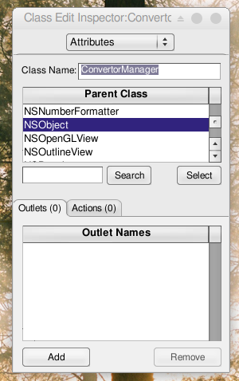

2.2 - Outlets and Actions#
Creating a subclass#
Now select the Classes part of the main window. Select the NSObject class and press Classes→Create Subclass…, in order to create a subclass of NSObject. It will be called NewClass.


You should then see the following inspector window. If not, select the new class (which should still be called NewClass) in the class browser of the main window, and press Classes→Edit Class…
Rename the class from NewClass to ConvertorManager (don’t forget to press Enter, or your change will not affect anything).

Adding outlets & actions#
Now let’s add some outlets. Outlets are basically instance variables of the class that you will connect to interface’s components at design time. Outlets represent the components you want to work with and of which you need to work in the code. Connecting them means interfacing the code with the gorm interface.
To edit outlets you need select ConvertorManager and get back into the Classes view, the Inspector will change accordingly.
So add three outlets: amount, rate, and result. Adding an outlet creates a new outlet called newOutlet: rename it by double-clicking and in-line editing.

You will now create an action. An action is an object method which can be linked to interface’s component at design time, so that a specific action on the component will get this method to be called. Actions specify interaction from the interface to the code, they are methods to which the interface will send messages. Actions carry as a parameter a sender which is the control generating the call.
Add one action named convert:, please notice the : at the end.

Instantiating the class#
Now that we have defined the class’s outlets and actions, we need to instantiate it. Press Classes→Instantiate. Doing this tells GNUstep to create an instance of this class when the application is launched (to be more precise, when the nib/gorm file is loaded.) You should now see a new object (ConvertorManager) in the Objects pane of Gorm’s main panel.
Connecting outlets and actions#
We now need to connect the outlets of the instance of ConvertorManager we have created to their corresponding components. As you may have guessed, the amount outlet is to be connected to the first text field, rate to the second and result to the third.
Done that, the ConvertorManager instance will be able to access those fields by using its instance variables. You will not have to write any code to have those connections up and working.
To connect the amount outlet to the first text field, you have to drag-and-drop while pressing the Control key from the ConvertorManager instance (the instance is in the Classes pane of Gorm’s main panel) to the first text field. Little S and T icons will appear showing who is the Source and who is the Target (those icons always appear in the bottom-left corner of the component. If they are not, then you are probably not selecting the component you want to select).

After dragging-and-dropping, you have to select which outlet of the Source you want to connect to the target, do this by clicking the correct outlet in the Outlets column of the Inspector and by pressing the button. Do this for all three outlets – amount, rate, and result.

Connecting an action is a similar operation. Do a drag-and-drop with the control key pressed, from the button to the instance of ConvertorManager. Note that this is in the opposite direction.
Then click target in the Outlets part of the inspector. All available actions of the target (here the ConvertorManager instance which has only one action) will appear in the Actions column. Click on the convert: action, and press the connect button. Now, every time the button is pressed it send a convert: message to the instance of ConvertorManager. The sender will be the Button.